학습 목표와 전체 흐름
판형과 쪽수를 정한 내 그림책을 실제 종이책 파일로 만듭니다. 가장 중요한 것은 표지(책의 겉면)이고, 그다음이 내지(책 속 쪽)와 판권 쪽입니다. 책날개는 이 시간에 다루지 않습니다.
알아보기 읽고 이해하는 구역
오늘의 학습 목표
- 교보문고 제작 스튜디오와 부크크 화면에서 내 책의 책등(세네카) 두께와 표지 파일 크기를 찾아 「내 책 규격표」에 적을 수 있다.
- AI에게 표지 설계(글자 자리, 책등 글자, 뒤표지 소개 글, 색)를 받아 내 표지 계획을 정할 수 있다.
- 캔바에서 mm 단위로 펼침 표지(뒤표지 + 책등 + 앞표지)를 만들고, 인쇄물용 PDF로 내려받을 수 있다.
- 미리캔버스에서 판형 + 사방 3mm 크기로 내지를 만들고, 여백·쪽 번호·쪽 순서를 지킬 수 있다.
- 교보문고와 부크크의 판권 쪽 양식을 받아 내 책에 맞게 고칠 수 있다.
- 두 곳의 규격 확인 도구로 표지와 내지 파일을 스스로 검사하고 결과를 기록할 수 있다.
전체 흐름
표지는 쪽수에 따라 크기가 바뀝니다. 그래서 먼저 쪽수와 종이로 책등 두께를 확인하고, 그 숫자로 표지를 만듭니다. 이 교안의 예시는 「할아버지의 라디오」입니다. 사양은 교보문고 A5(국판) 148 × 210mm, 무선 제본, 컬러, 스노우 100g, 52쪽입니다.
오늘 쓰는 말
| 말 | 뜻 |
|---|---|
| 판형 | 책의 크기와 모양. 예: A5(국판) 148 × 210mm |
| 재단 여백(도련) | 인쇄 뒤 잘려 나가는 바깥 3mm. 쪽 끝까지 가는 그림과 색은 이 3mm까지 채웁니다. |
| 재단선 | 책이 실제로 잘리는 선. 파일 끝에서 3mm 안쪽입니다. |
| 책등(세네카) | 책을 꽂았을 때 보이는 옆면. 쪽수와 종이 두께로 정해집니다. |
| 접지선 | 책등과 앞·뒤표지가 만나 접히는 선. 글자를 걸치지 않습니다. |
| 펼침 표지(전개도) | 뒤표지 + 책등 + 앞표지를 한 장으로 펼친 표지 파일 |
| 판권 쪽 | 책 제목, 지은이, 펴낸 곳, 펴낸 날, ISBN, 저작권 표시를 적는 쪽 |
해 보기 직접 따라 하는 구역
1준비물 확인하기
- 지난 시간에 올린 「POD 판형 계획서」 (판형, 낼 곳, 목표 쪽수)
- 표지에 쓸 그림 1~2장 (앞표지용 세로 그림, 뒤표지용 배경)
- 내지에 들어갈 장면 그림과 확정한 글
- 캔바·미리캔버스 계정, 제미나이
- PDF를 열 프로그램 (아크로뱃 리더 또는 이지피디에프)
- 「자료 받기」 실습 프롬프트 모음 (prompts.txt)
2패들렛에 올릴 것
| 게시물 제목 | 올릴 것 |
|---|---|
| 내 책 규격표 | STEP 1에서 채운 표 (사진이나 캡처) |
| 표지 PDF와 검사 결과 | 캔바에서 받은 표지 PDF + 규격 확인 도구 결과 화면 |
| 내지 PDF와 검사 결과 | 내지 PDF(용량이 크면 앞쪽 몇 장 캡처) + 문서 속성 화면 + 규격 확인 결과 |
모두 「출판 편집제작 및 플랫폼 출간」 결과물로 남깁니다.
내 책 숫자 정하기: 책등과 표지 크기
표지 크기는 「판형 가로 × 2 + 책등 + 6mm」입니다. 책등은 쪽수와 종이가 정하므로, 두 곳의 화면에서 내 사양으로 직접 숫자를 받습니다.
알아보기 읽고 이해하는 구역
펼침 표지는 이렇게 생겼습니다
책등 두께는 예시(A5·스노우 100g·52쪽)의 값입니다. 내 책은 쪽수와 종이가 달라서 숫자가 다릅니다. 반드시 내 사양을 넣어 받은 값을 씁니다.
교보문고: 제작 스튜디오가 계산해 줍니다
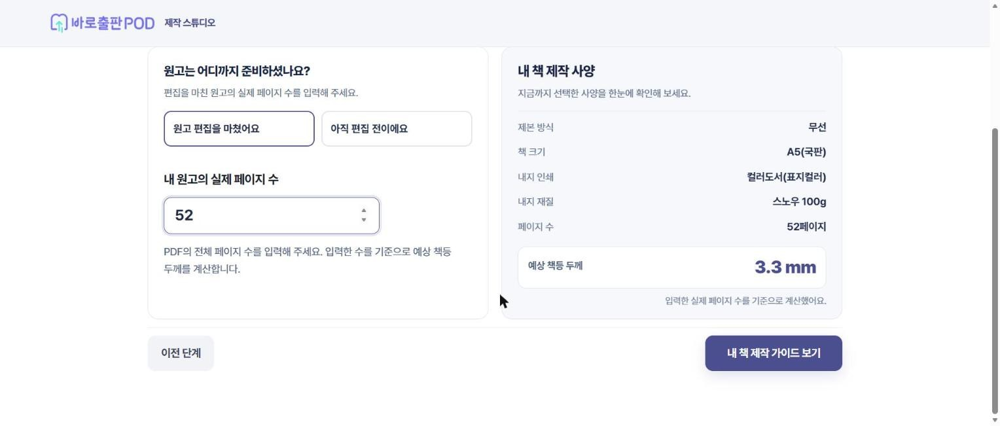
제본 → 판형 → 인쇄·용지 → 페이지 수의 4단계를 고르면 책등이 나옵니다. 「내 책 제작 가이드 보기」를 누르면 표지 전개도 크기까지 나옵니다.
교보문고: 표지 가이드에 전개도가 나옵니다
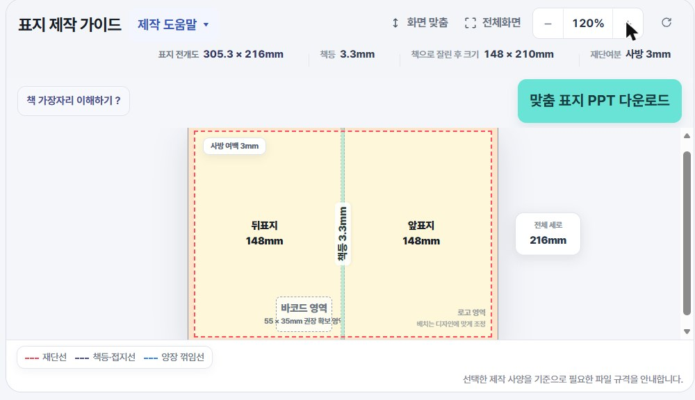
- 「맞춤 표지 PPT 다운로드」를 누르면 이 크기로 맞춘 파워포인트 표지 틀을 받을 수 있습니다.
- 표지는 내지 쪽수를 확정한 뒤에 만듭니다. 쪽수가 바뀌면 책등이 바뀌고 표지도 다시 만들어야 합니다.
부크크: 책 만들기 화면의 「두께」 칸
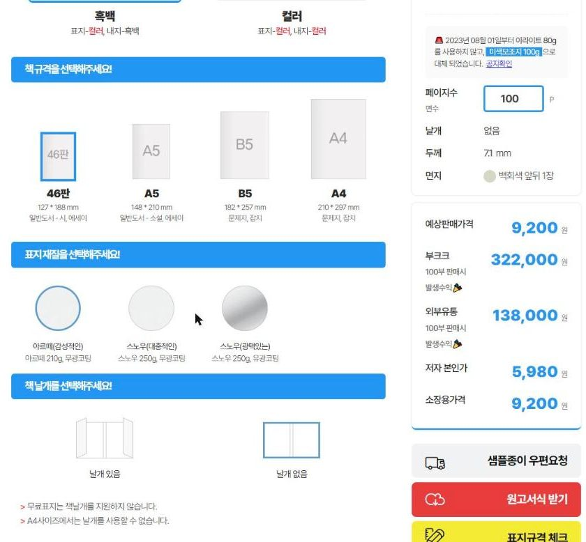
부크크는 종이가 교보와 달라서 같은 쪽수라도 책등 두께가 다릅니다. 표지는 낼 곳마다 따로 만듭니다.
부크크: 공식 표지 작업 가이드
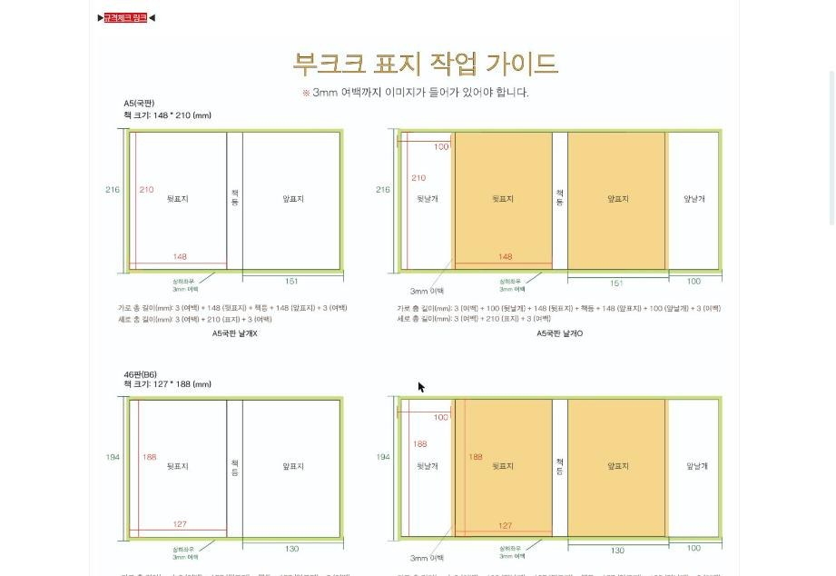
| 부크크 판형 | 책 크기 | 표지 세로 |
|---|---|---|
| 46판 | 127 × 188 | 194 |
| A5(국판) | 148 × 210 | 216 |
| B5(46배판) | 182 × 257 | 263 |
| A4 | 210 × 297 | 303 |
해 보기 직접 따라 하는 구역
1교보문고 제작 스튜디오에서 숫자 받기
- 제작 스튜디오를 열고 「제작 준비하기」를 누릅니다.
- 01 제본: 「무선」을 누르고 「다음 단계」
- 02 판형: 내 판형을 누르고 「다음 단계」 (A5면 「A5(국판) 148 × 210mm」)
- 03 인쇄·용지: 흑백/컬러를 고르고 종이를 누른 뒤 「다음 단계」
- 04 페이지 수: 「원고 편집을 마쳤어요」 → 목표 쪽수 입력 → 오른쪽 「예상 책등 두께」를 적습니다.
- 「내 책 제작 가이드 보기」 → 「표지 가이드」 위쪽의 「표지 전개도」 크기를 적습니다.
2부크크에서 숫자 받기 (부크크에도 낼 때)
- 부크크 → 책만들기 → 새종이책 → 색상, 책 규격, 표지 재질을 고릅니다. 책날개는 「없음」.
- 쪽수를 넣고 「두께」 칸의 값을 적습니다.
- 표지 가로 = 3 + 판형 가로 + 두께 + 판형 가로 + 3 으로 계산합니다.
예) A5, 두께 3.6mm라면 3 + 148 + 3.6 + 148 + 3 = 305.6mm, 세로 216mm
3「내 책 규격표」 채우기
| 항목 | 예시 (할아버지의 라디오, 교보) | 내 책 · 교보 | 내 책 · 부크크 |
|---|---|---|---|
| 판형 | A5(국판) 148 × 210mm | ||
| 제본 · 인쇄 · 종이 | 무선 · 컬러 · 스노우 100g | ||
| 내지 쪽수 (짝수) | 52쪽 | ||
| 책등 두께 | 3.3mm | ||
| 표지 전개도 크기 | 305.3 × 216mm | ||
| 앞표지만 크기 | 154 × 216mm | (부크크는 펼침만) | |
| 내지 파일 크기 | 154 × 216mm | ||
| 표지 방식 | 펼침 (STEP 3) | 펼침 |
표를 손으로 그려 사진을 찍거나, 메모장에 적어 캡처해서 패들렛에 「내 책 규격표」로 올립니다.
표지 설계: 무엇을 어디에 놓을까
캔바를 열기 전에 표지에 들어갈 것과 자리를 먼저 정합니다. AI에게 설계를 받고, 내가 고릅니다.
알아보기 읽고 이해하는 구역
표지에 들어가는 것
| 자리 | 들어가는 것 | 지킬 것 |
|---|---|---|
| 앞표지 | 제목, (부제), 지은이, 대표 그림 | 제목은 멀리서도 읽히게. 그림의 얼굴·손은 글자로 가리지 않습니다. 교보 개인 작가는 퍼플 로고를 넣습니다. |
| 책등 | 제목, 지은이 (두께가 될 때만) | 그림책 50쪽 안팎은 책등이 3~5mm로 얇아 글자를 안 넣는 경우가 많습니다. 교보는 책등이 10mm 이하면 책등의 퍼플 로고를 생략할 수 있습니다. |
| 뒤표지 | 소개 글 3~4줄, 그림이나 배경색 | 오른쪽 아래 55 × 35mm는 비웁니다. ISBN·바코드는 승인 뒤 인쇄소에서 넣습니다(교보 개인 작가). |
| 모든 곳 | 제목 표기 | 표지 제목, 책등 제목, 판권 쪽 도서명, 등록할 도서명을 모두 같게 씁니다. |
바코드 자리는 비워 둡니다
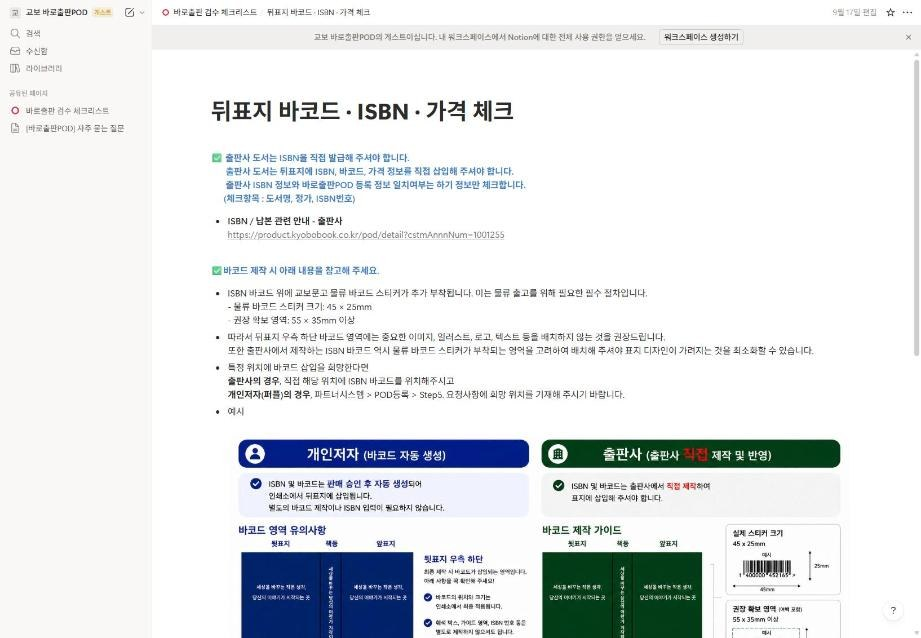
- 물류 바코드 스티커는 45 × 25mm이고, 55 × 35mm 이상을 비워 두라고 합니다.
- 다른 자리에 넣고 싶으면 파트너시스템 POD등록 Step5 요청사항에 원하는 위치를 적습니다.
- 부크크의 표지 가이드와 FAQ에서는 바코드 자리 안내를 찾지 못했습니다. 부크크도 뒤표지 오른쪽 아래는 비워 두는 것이 안전합니다.
교보 개인 작가는 퍼플 로고

- 앞표지와 책등(옆)에 넣습니다. 책등이 10mm 이하이면 책등 로고는 생략할 수 있습니다.
- 로고는 교보 공지에서 받습니다. 앞표지 아래쪽 구석처럼 그림을 가리지 않는 자리에 작게 둡니다.
표지 그림은 충분히 커야 합니다
| 쓰는 곳 | 재단 여백 포함 크기 | 필요한 픽셀 (300dpi) |
|---|---|---|
| A5 앞표지 한 면 | 154 × 216mm | 1,819 × 2,551 이상 |
| A5 펼침 전체 (책등 3.3mm) | 305.3 × 216mm | 3,606 × 2,551 이상 |
AI 그림이 1,024픽셀처럼 작으면 Upscayl로 먼저 키운 뒤 캔바에 넣습니다. 캔바 안에서 늘리면 흐려집니다. 앞표지 그림이 세로(3:4)면 위아래가 조금 남으니, 위쪽 빈 하늘·벽을 제목 자리로 씁니다.
해 보기 직접 따라 하는 구역
1제미나이에게 표지 설계 받기
【 】 안을 내 책으로 바꿔서 보냅니다. 내 그림책 PDF를 함께 첨부하면 줄거리 칸은 짧게 써도 됩니다.
너는 그림책 표지 디자이너야. 아래 내 그림책 정보를 보고 종이책 표지를 설계해 줘. 그림과 글자는 내가 캔바에서 직접 배치할 거야. [내 책 정보] - 제목: 【 】 / 부제: 【없으면 "없음"】 / 지은이: 【 】 - 줄거리: 【세 줄 정도】 - 독자: 【예: 어린 시절을 그리워하는 어른, 손주와 함께 읽는 조부모】 - 판형: 【예: A5 148×210mm】 / 내지 쪽수: 【예: 52쪽】 - 낼 곳과 표지 방식: 【예: 교보문고 바로출판, 펼침 표지(뒤표지+책등+앞표지)】 - 책등 두께: 【예: 3.3mm】 (사이트에서 계산한 값) - 앞표지에 쓸 그림: 【예: 5쪽 그림, 툇마루에서 할아버지가 라디오를 돌리는 장면, 세로 그림】 [해 줄 일] 1. 앞표지 배치: 제목·지은이를 어디에(위·가운데·아래) 어떤 크기 차이로 놓을지, 그림의 어느 부분이 글자에 가려지면 안 되는지 표로 정리해 줘. 2. 책등: 두께 【 】mm에 글자를 넣을 수 있는지 판단하고, 넣는다면 무엇을 어느 방향으로 넣을지 알려 줘. 3. 뒤표지 소개 글 3안: 각 3~4줄, 독자에게 말을 거는 말투로. 안마다 느낌을 한 줄로 설명해 줘. 4. 뒤표지 배치: 소개 글을 놓을 자리와, 오른쪽 아래 바코드 자리(가로 55mm × 세로 35mm)를 비우는 방법. 5. 색: 그림 분위기에 맞는 바탕색과 글자색 2~3개를 쉬운 이름과 색 코드로 추천해 줘. [지킬 것] - 줄거리에 없는 내용은 소개 글에 쓰지 마. - 글꼴은 무료로 상업적 이용이 되는 한글 글꼴만 추천해 줘. - 배치와 색은 표로, 소개 글은 안마다 코드 블록 하나로 줘.
2예시 결과 보기
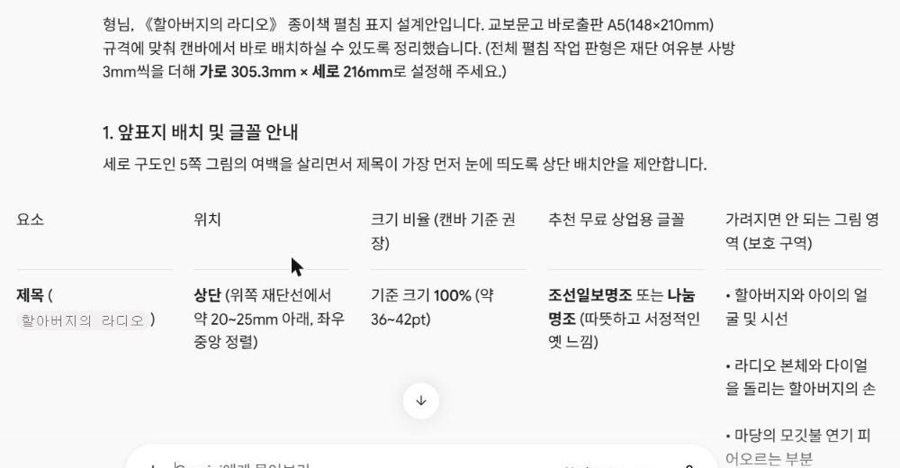
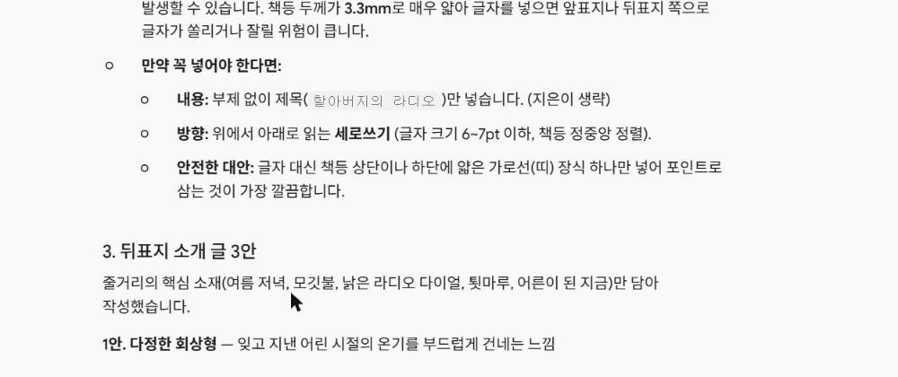
이 예시에서는 「책등 3.3mm는 글자를 넣지 않고 바탕색만 잇기」를 권했습니다. 결과는 매번 조금씩 다릅니다.
3내가 고르고 고치기
- 소개 글 3안 중 하나를 고르고, 책에 없는 말이 들어갔는지 확인합니다. 들어갔으면 지웁니다.
- 추천 글꼴은 눈누에서 상업적 이용(출판물)이 되는지 직접 확인합니다.
- 색 코드는 캔바에 그대로 넣을 수 있게 메모해 둡니다.
캔바로 표지 만들기
캔바는 mm 소수점(예: 305.3)까지 넣을 수 있어서 펼침 표지에 맞습니다. 미리캔버스는 소수점이 들어가지 않아 펼침 표지에는 쓰지 않습니다.
알아보기 읽고 이해하는 구역
교보문고는 표지를 세 가지 방식으로 올릴 수 있습니다
| ① 앞표지만 | ② 앞 + 뒤 | ③ 펼침 | |
|---|---|---|---|
| 계산 | 필요 없음 | 필요 없음 | 책등 두께로 계산 |
| 뒤표지 | 흰색, 글 없음 | 내가 만든 소개 글·그림 | 내가 만든 소개 글·그림 |
| 책등 | 흰 바탕, 검은 글씨, 퍼플 로고 | 흰 바탕, 검은 글씨, 퍼플 로고 | 내가 만듦 |
| 만드는 도구 | 캔바 또는 미리캔버스(154 × 216은 정수) | 캔바 또는 미리캔버스 | 캔바 (소수점) 또는 교보 맞춤 표지 PPT |
| 부크크 | 부크크는 펼침 표지만 받습니다. 부크크에 낼 때는 ③ 방식으로 부크크 숫자를 넣어 따로 만듭니다. | ||
처음 내는 책이면 ①이나 ②가 가장 안전합니다. 책등에서 반려될 일이 없습니다. 이 STEP은 가장 어려운 ③ 펼침으로 연습합니다. ③을 할 수 있으면 ①·②는 크기만 바꾸면 됩니다.
캔바: 맞춤형 크기를 mm로
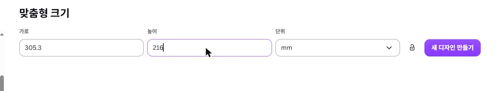
캔바: 위치 칸에 숫자를 넣어 자리 나누기
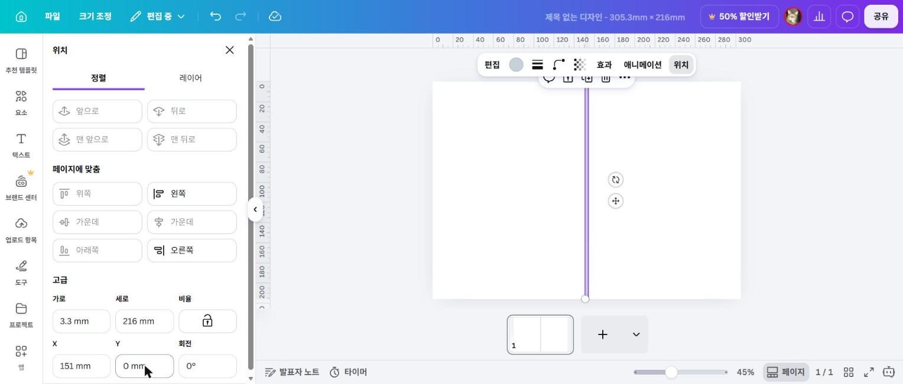
눈으로 끌어서 맞추면 1mm씩 틀어집니다. 위치 칸의 숫자로 놓습니다.
자리 숫자표 (예시: A5, 책등 3.3mm)
| 상자 | X | Y | 가로 | 세로 | 쓰임 |
|---|---|---|---|---|---|
| 뒤표지 판 | 0 | 0 | 151 | 216 | 뒤표지 그림·바탕 (재단 여백 3mm 포함) |
| 책등 | 151 | 0 | 3.3 | 216 | 책등 색 · 글자 |
| 앞표지 판 | 154.3 | 0 | 151 | 216 | 앞표지 그림 (재단 여백 3mm 포함) |
| 바코드 비움 상자 | 86 | 168 | 55 | 35 | 뒤표지 오른쪽 아래. 확인용, 내려받기 전에 지움 |
| 글자 안전 상자 (앞) | 167.3 | 13 | 125 | 190 | 앞표지 글자는 이 안에. 끝에서 13mm(재단 3 + 여백 10), 접지선에서 13mm |
| 글자 안전 상자 (뒤) | 13 | 13 | 125 | 190 | 뒤표지 소개 글은 이 안에 |
내 책은 책등 숫자만 바꿉니다. 앞표지 X = 3 + 판형 가로 + 책등, 앞표지 안전 상자 X = 앞표지 X + 13. 바코드·안전 상자의 위치는 이 수업의 기준값입니다. 두 곳 모두 표지 글자 여백을 숫자로 정하지 않았기 때문에, 내지 기준(부크크 10~15mm)에 맞췄습니다.
캔바: 눈금자 켜기
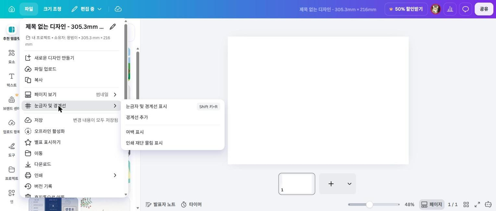
캔바: 인쇄물 PDF로 내려받기
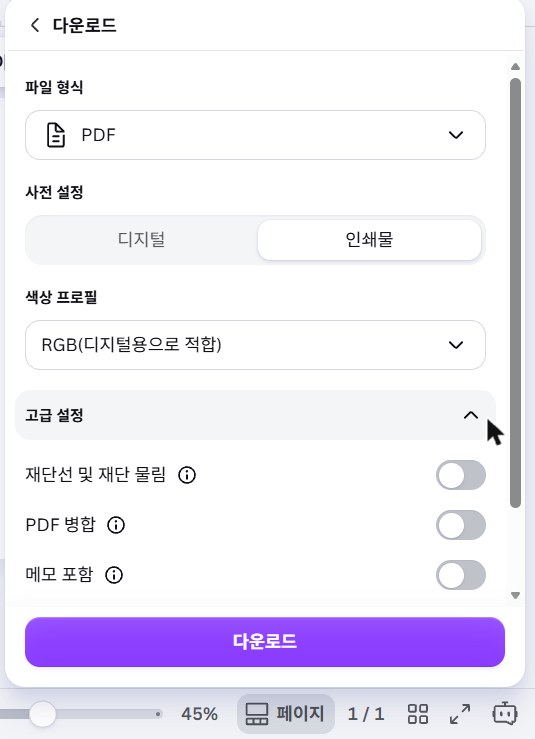
- 「재단선 및 재단 물림」은 끕니다. 켜면 바깥에 테두리가 더 붙어 크기가 틀어집니다.
- 색상 프로필은 무료에서는 RGB입니다. CMYK는 캔바 Pro에서만 고를 수 있습니다. 부크크는 RGB여도 받습니다.
해 보기 직접 따라 하는 구역
1판 만들기
- 캔바 왼쪽 「만들기」 → 왼쪽 목록 아래 「맞춤형 크기」
- 단위 mm → 가로에 내 표지 전개도 가로(예: 305.3), 높이에 216 → 「새 디자인 만들기」
- 「파일 → 눈금자 및 경계선 → 눈금자와 경계선 표시」
- 왼쪽 「요소 → 도형」에서 사각형을 넣고, 오른쪽 위 「위치」 → 「고급」에 자리 숫자표대로 넣습니다. 뒤표지 판, 책등, 앞표지 판, 바코드 비움 상자, 글자 안전 상자 두 개, 모두 여섯 개입니다.
- 안전 상자와 바코드 상자는 색을 연하게, 테두리만 보이게 바꿉니다(투명도 30% 정도).
2그림 넣기
- 「업로드 항목」에 Upscayl로 키운 표지 그림을 올립니다.
- 앞표지 그림을 앞표지 판 상자에 끌어다 놓아 프레임처럼 채우거나, 그림을 X 154.3 · 가로 151로 맞춥니다.
- 뒤표지는 STEP 2에서 고른 바탕색으로 뒤표지 판 상자를 칠합니다.
- 책등 상자는 앞·뒤 바탕과 이어지는 색으로 칠합니다.
3글자 넣기
- 앞표지: 제목, 지은이를 앞 안전 상자 안에 넣습니다.
- 뒤표지: 고른 소개 글을 뒤 안전 상자 안에, 바코드 상자와 겹치지 않게 넣습니다.
- 책등: 두께가 충분할 때만 세로로 제목을 넣습니다. 글자가 책등 밖으로 1mm라도 나가면 지웁니다.
- 교보 개인 작가: 앞표지 아래쪽에 퍼플 로고를 작게 넣습니다.
4확인용 상자 지우고 내려받기
- 바코드 상자와 글자 안전 상자 두 개를 지웁니다(뒤표지 판·책등·앞표지 판은 색을 칠했으면 남깁니다).
- 「공유 → 다운로드 → PDF → 인쇄물」, 고급 설정에서 「재단선 및 재단 물림」 끔 → 다운로드
- 파일 이름: 「표지_교보_내 제목.pdf」
5부크크용 표지 따로 만들기
- 캔바 「파일 → 복사」로 교보 표지를 복사합니다.
- 「크기 조정」은 그림을 늘려 버리므로 쓰지 않습니다. 새 맞춤형 크기(부크크 숫자)로 디자인을 만들고 요소를 붙여 넣습니다.
- 책등 상자를 부크크 두께로, 앞표지 판 X를 3 + 판형 가로 + 부크크 두께로 바꿉니다.
- 퍼플 로고는 지웁니다. 부크크 FAQ에 「부크크 로고파일 다운로드」 글이 있으니, 부크크 로고를 넣을지는 그 안내를 확인합니다.
6교보 ①·② 방식으로 할 때
- 맞춤형 크기 154 × 216mm로 앞표지 한 장을 만듭니다. ②는 뒤표지도 같은 크기로 한 장 더 만듭니다.
- 글자는 끝에서 13mm 안쪽에 둡니다. 154 × 216은 정수라 미리캔버스로 만들어도 됩니다.
미리캔버스로 내지 만들기
내지는 판형 + 사방 3mm 크기의 쪽을 쪽수만큼 이어 붙인 PDF입니다. 정수 크기라 미리캔버스로 만듭니다.
알아보기 읽고 이해하는 구역
쪽 크기와 여백

| 부크크 | 교보문고 | |
|---|---|---|
| 파일 크기 (A5) | 154 × 216mm | 154 × 216mm |
| 글자 · 쪽 번호 여백 | 끝선에서 10~15mm | 20mm (권장 30), 책 가운데 쪽 26mm |
| 정사이즈(148 × 210)로 올리면 | 부크크가 사방 3mm를 늘려 2~4% 커짐 | 판형 불일치로 반려(반려 1위) |
두 곳 다 낼 거면 교보 기준(바깥 20mm, 가운데 26mm)을 따릅니다.
쪽 순서: 1쪽은 오른쪽
PDF의 1쪽이 책의 오른쪽에 옵니다. 「왼쪽 그림 · 오른쪽 글」 그림책은 그림을 짝수 쪽에 둡니다. 전체 쪽수는 짝수로, 50쪽 이상으로 맞춥니다.
실제로 반려된 사례
| 반려 내용 | 원인 | 이렇게 막습니다 |
|---|---|---|
| 바깥 여백 | 쪽 번호가 재단선에서 2.4mm에 있었음 | 쪽 번호를 아래 끝에서 13mm 이상(교보도 낼 때 23mm 이상) 올립니다. |
| 원고 규격 | 한 파일 안에 크기가 다른 쪽이 섞였음 | 모든 쪽을 같은 크기로 만듭니다. 다른 파일에서 복사해 온 쪽을 특히 확인합니다. |
| 해상도 | 100MB를 넘어 「이미지로 변환」으로 줄였더니 글자까지 그림이 되어 흐려짐 | 줄이지 말고 부크크에 메일로 보냅니다(info@bookk.co.kr). 교보는 200MB까지 받습니다. |
해 보기 직접 따라 하는 구역
1쪽 크기 잡기
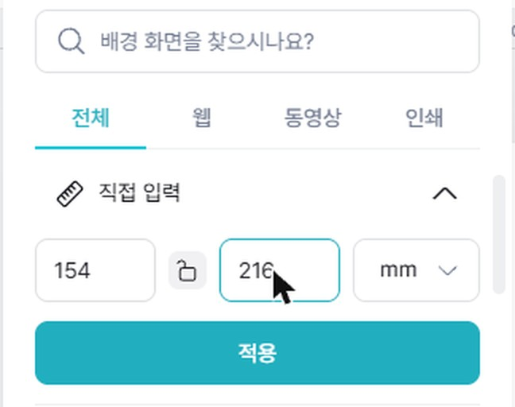
- 디자인 화면 위쪽 가운데의 크기 글자를 누르고 「직접 입력」을 펼칩니다.
- 오른쪽 단위를 mm로 먼저 바꾼 뒤 가로 154, 세로 216을 넣고 「적용」을 누릅니다(A5 기준). 가운데 자물쇠가 잠겨 있으면 풀고 넣습니다.
- 미리캔버스 다운로드에는 재단선·도련 칸이 없습니다. 크기에 이미 사방 3mm를 더했으니 그대로 받으면 됩니다.
- 안내선(가이드)을 켜고, 위·아래·바깥 23mm, 책 가운데 쪽 29mm(교보 기준 + 재단 3mm) 자리에 안내선을 둡니다.
2쪽 채우기
- 지난 시간 「POD 판형 계획서」의 쪽 배치표 순서대로 쪽을 만듭니다.
- 쪽에 꽉 차는 그림은 쪽 끝까지 채웁니다. 얼굴·손·글자는 안내선 안에 둡니다.
- 쪽 번호는 아래쪽 안내선 안에 둡니다.
- 판권 쪽은 STEP 5에서 만들어 2쪽이나 마지막 쪽에 넣습니다.
3PDF로 받고 크기를 내 눈으로 확인
- 오른쪽 위 「다운로드」 → 파일 형식 「PDF (인쇄용)」(300 DPI) → 「고해상도 다운로드」
- 아크로뱃 리더에서 「파일 → 문서 속성 → 페이지 크기」를 봅니다. 154 × 216mm가 아니면 1mm라도 고쳐야 합니다.
- 전체 쪽수가 짝수이고 50쪽 이상인지 봅니다.
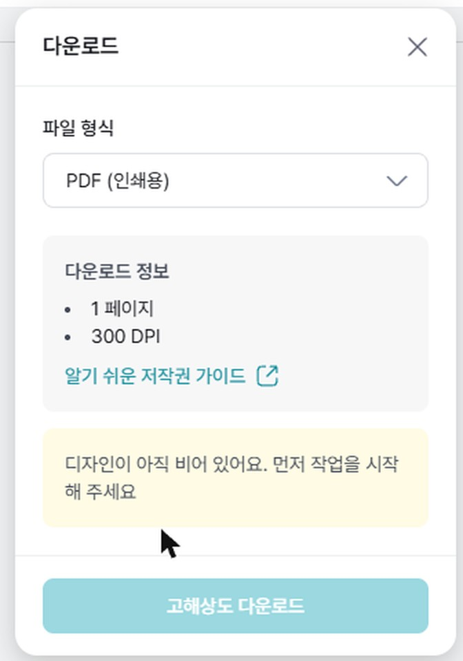
4AI에게 내지 점검시키기
내 내지 PDF를 첨부하고 【 】 안을 바꿔 보냅니다. 지난 시간에 쓴 점검 프롬프트와 같습니다.
너는 종이책(POD) 제작 검수자야. 첨부한 내 원고 PDF를 아래 기준으로 점검해 줘. [내 책 정보] - 낼 곳: 【부크크 / 교보문고 바로출판 / 두 곳 모두】 - 판형: 【예: A5 148×210mm】 - 제본과 날개: 【예: 무선, 날개 없음】 [점검 기준] 1. 내지 쪽수가 50쪽 이상이고 짝수인가 2. 판권 쪽이 원고 앞이나 뒤에 있는가 3. 쪽 크기가 판형보다 사방 3mm씩 큰가 (예: 148×210 → 154×216) 4. 쪽에 꽉 차는 그림이 바깥 3mm까지 채워져 있는가 5. 글이 가장자리에서 20mm 이상 안쪽에 있는가 6. PDF 1쪽을 오른쪽으로 보고 펼쳤을 때, 그림은 왼쪽(짝수 쪽)·글은 오른쪽(홀수 쪽)에 오는가 7. 두 쪽을 잇는 그림이 있으면, 가운데 접히는 곳(제본선)에 얼굴이나 글자가 걸리는가 8. 글과 얼굴이 책 가운데 쪽(제본선)에서 26mm 이상 떨어져 있는가 [출력] - 표: 기준 | 결과(맞음 · 안 맞음 · 확인 못 함) | 해당 쪽 번호 | 고칠 방법 - 그 아래에 가장 먼저 고칠 것 세 가지 [지킬 것] - PDF에서 확인할 수 없는 것은 "확인 못 함"이라고 적어. 짐작으로 "맞음"이라고 하지 마. - 쪽 번호는 PDF의 쪽 번호로 적어 줘. - 원고는 고치지 말고 점검만 해.
5다른 길: 교보 내지 템플릿
교보 제작 스튜디오의 「내지 가이드 → 내지 템플릿 선택」에서 판형에 맞춘 한글(HWP)·워드(DOCX) 원본 템플릿을 받을 수 있습니다. 그림책·에세이는 「감성형」을 고릅니다. 한글이나 워드에 익숙하면 이 틀에 그림과 글을 넣고 PDF로 저장해도 됩니다.
판권 쪽 만들기
판권 쪽이 없으면 두 곳 모두 반려합니다. 양식을 직접 만들지 않고, 각 곳이 주는 양식을 받아 정해진 부분만 고칩니다.
알아보기 읽고 이해하는 구역
교보문고와 부크크의 판권 쪽
| 항목 | 교보문고 (개인 작가 = 펴낸 곳 퍼플) | 부크크 |
|---|---|---|
| 꼭 넣나 | 없으면 반려. 반려 사유 2위 | ISBN 도서는 필수 |
| 양식 | 교보 판권 샘플을 받아 빨간 글자만 고침. 퍼플 출판등록번호(제300-2012-167호)가 있어야 함 | 부크크 판권지를 받아 도서명, 저자명, ⓒ 저자명만 고침 |
| 자리 | 원고 파일 앞이나 뒤 | 본문 2쪽 또는 마지막 쪽 |
| 발행일 | 비워 두면 안 됨. 등록할 때 쓰는 출간일과 같게. 판매신청일 전후 2개월 안이면 반려하지 않음 | 서식 안내를 따름 |
| 저작권 표시 | ⓒ 이름 2026 (출간 연도) | ⓒ 저자명 |
| 이름 | 지은이는 필명도 됨. 단 가입과 정산 계좌는 실명 | 등록 정보와 같게 |
펴낸 곳이 다르므로 두 곳에 다 낼 때는 판권 쪽만 바꾼 내지 PDF를 두 개 만듭니다. 판권 쪽도 내지 쪽수에 들어갑니다.
교보문고: 반려 2위, 판권정보
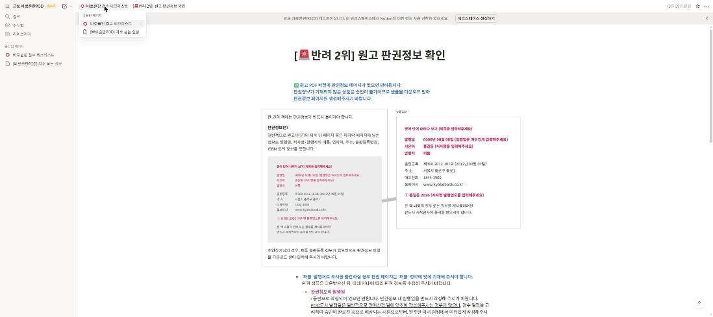
부크크: 판권지 다운로드
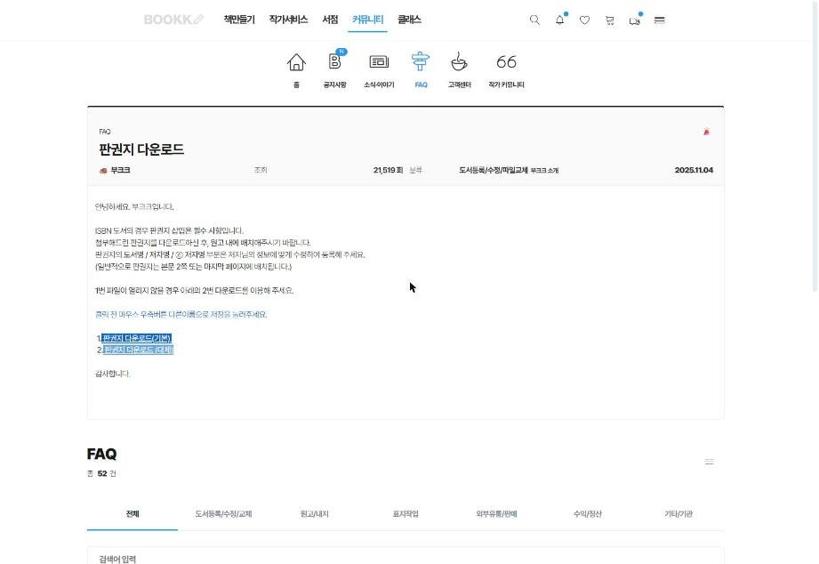
교보문고: AI를 썼으면 등록할 때 「Yes」
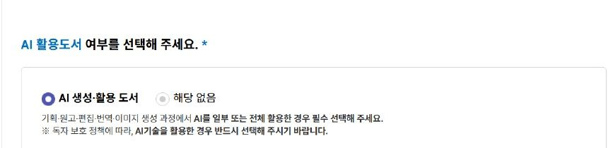
원고나 표지에 생성형 AI를 일부라도 썼으면(그림 생성, 글 다듬기 포함) 등록 때 「AI 활용 여부」에 Yes를 고릅니다. 상품 페이지에 「AI(생성형) 활용 제작 도서」가 자동으로 표시됩니다. 알리지 않아 독자 항의가 생기면 정산에서 차감될 수 있습니다(2026.3.25 공지). 우리 반 책은 모두 해당합니다.
해 보기 직접 따라 하는 구역
1양식 받기
- 교보: 판권정보 페이지 안내 아래 첨부파일 「책사이즈(판형별)원고_템플릿_판권샘플」을 받아 압축을 풉니다.
- 부크크: FAQ에서 「판권지 다운로드」 글을 열고 1번(안 되면 2번)을 받습니다.
2내 책에 맞게 고치기
| 고칠 것 | 교보 | 부크크 |
|---|---|---|
| 도서명 | ✔ (표지·등록과 같게) | ✔ |
| 지은이(저자명) | ✔ | ✔ |
| 발행일 | ✔ 등록 출간일과 같게 | 서식대로 |
| ⓒ 줄 | ⓒ 내 이름 2026 | ⓒ 내 이름 |
| 나머지(펴낸 곳·등록번호·주소) | 그대로 둡니다. ISBN 칸은 비워 둡니다. | |
3내지에 넣기
- 고친 판권 쪽을 PDF나 그림으로 저장해 미리캔버스 내지의 판권 자리(2쪽 또는 마지막 쪽)에 넣습니다.
- 판권 글자도 바깥 여백(교보 20mm) 안에 들어가게 크기를 맞춥니다.
- 교보용과 부크크용 내지를 따로 저장합니다. 파일 이름: 「내지_교보_내 제목.pdf」, 「내지_부크크_내 제목.pdf」
파일 검사하고 결과 남기기
등록하기 전에 두 곳이 만든 규격 확인 도구에 내 파일을 넣어 봅니다. 결과 화면을 패들렛에 올립니다.
알아보기 읽고 이해하는 구역
교보문고: 제작 스튜디오 「내 파일 확인하기」
제작 스튜디오에서 내 사양을 고른 뒤, 표지 파일(전개도 PDF·JPG·PNG)이나 내지 PDF를 올리면 선택한 제작 기준과 파일 크기를 비교해 줍니다.
해 보기 직접 따라 하는 구역
1표지 점검표
- PDF 문서 속성의 크기가 「내 책 규격표」의 표지 크기와 같은가 (교보·부크크 따로)
- 그림과 바탕색이 파일 끝까지 채워졌는가 (재단선에서 멈추지 않았는가)
- 제목·지은이·소개 글이 끝에서 13mm 안쪽에 있는가
- 접지선(책등 양쪽 선)에 걸친 글자가 없는가
- 뒤표지 오른쪽 아래 55 × 35mm가 비어 있는가
- 표지 제목, 책등 제목, 판권 도서명이 모두 같은가
- 교보: 앞표지에 퍼플 로고가 있는가 (책등 10mm 이하면 책등 로고는 생략 가능)
- 확인용 상자(바코드·안전 상자)를 지우고 내려받았는가
2규격 확인 도구에 넣기
- 교보: 제작 스튜디오에서 내 사양을 고르고 「내 파일 확인하기」에 표지 PDF, 내지 PDF를 차례로 올립니다.
- 부크크: 표지 규격체크·내지 규격체크에서 사양을 고르고 PDF를 올립니다.
- 결과 화면을 캡처합니다.
3패들렛에 올리기
| 게시물 제목 | 올릴 것 |
|---|---|
| 표지 PDF와 검사 결과 | 표지 PDF + 규격 확인 캡처 + 점검표 결과 |
| 내지 PDF와 검사 결과 | 내지 PDF(크면 앞 몇 쪽 캡처) + 문서 속성 캡처 + 규격 확인 캡처 |
막힐 때
자주 막히는 곳과 푸는 방법입니다.
알아보기 읽고 이해하는 구역
자주 막히는 곳
| 이럴 때 | 이렇게 |
|---|---|
| 미리캔버스에 305.3이 안 들어감 | 미리캔버스는 mm 소수점이 안 들어갑니다. 펼침 표지는 캔바로, 또는 교보 「맞춤 표지 PPT」로 만듭니다. |
| 내려받은 PDF가 1mm 크거나 작음 | 캔바는 「재단선 및 재단 물림」이 꺼져 있는지 봅니다. 미리캔버스는 다시 받아 문서 속성으로 확인합니다. |
| 쪽수를 바꿨음 | 책등이 바뀝니다. 제작 스튜디오·부크크에서 책등을 다시 받고, 책등 상자와 앞표지 판 X만 고칩니다. |
| 캔바 「크기 조정」을 눌렀더니 그림이 늘어남 | 되돌리기(Ctrl + Z) 후, 새 맞춤형 크기 디자인에 요소를 붙여 넣습니다. |
| 그림이 흐림 | 캔바 안에서 늘리지 말고 Upscayl로 키운 그림을 다시 올립니다. |
| 부크크 내지가 100MB를 넘음 | 아크로뱃 「이미지로 변환」으로 줄이지 않습니다. info@bookk.co.kr로 메일 제출합니다. |
| 펼침 표지가 너무 어려움 | 교보는 ① 앞표지만 올려도 됩니다(154 × 216). 개인 작가는 교보 무료 표지도 쓸 수 있습니다(가로판·변형신국판·정사각판·양장 제외). |
| 책등에 글자를 넣고 싶음 | 책등이 얇으면 글자가 앞·뒤로 밀려 보일 수 있습니다. 넣는다면 책등 상자 가로보다 작은 글자로, 가운데 정렬합니다. |
근거 문서 모음
2026년 11월 24일에 확인한 내용입니다. 두 곳의 안내는 바뀔 수 있으니 등록 전에 원문을 한 번 더 봅니다.